Learning Module 6 Simulation Methods - Part 1: Introduction
Volume 1: Quantitative Methods
Learning Module 6 Simulation Methods
Part 1/2: Introduction (PDF Pages 183–198)
Tập 1: Phương pháp Định lượng (Quantitative Methods)
Học phần 6: Các Phương pháp Mô phỏng (Simulation Methods)
Phần 1/2: Giới thiệu (Introduction) (Trang PDF 183–198)
L E A R N I N G M O D U L E
H Ọ C P H Ầ N
6
6
Simulation Methods
Các Phương pháp Mô phỏng (Simulation Methods)
by Kobor Adam, PhD, CFA.
tác giả: Kobor Adam, PhD, CFA.
Adam Kobor, PhD, CFA, at New York University Investment Office (USA)
Adam Kobor, PhD, CFA, tại Văn phòng Đầu tư Đại học New York (Hoa Kỳ)
LEARNING OUTCOMES
MỤC TIÊU HỌC TẬP (LEARNING OUTCOMES)
Mastery The candidate should be able to: explain the relationship between normal and lognormal distributions and why the lognormal distribution is used to model asset prices when using continuously compounded asset returns describe Monte Carlo simulation and explain how it can be used in investment applications describe the use of bootstrap resampling in conducting a simulation based on observed data in investment applications
Mức độ Thành thạo – Ứng viên cần có khả năng: - Giải thích mối quan hệ giữa phân phối chuẩn (normal distribution) và phân phối log-chuẩn (lognormal distribution) cũng như lý do tại sao phân phối log-chuẩn được sử dụng để mô hình hóa giá tài sản khi sử dụng tỷ suất sinh lợi tài sản ghép lãi liên tục (continuously compounded asset returns). - Mô tả mô phỏng Monte Carlo (Monte Carlo simulation) và giải thích cách thức sử dụng phương pháp này trong các ứng dụng đầu tư. - Mô tả việc sử dụng lấy mẫu lại kiểu tự thân (bootstrap resampling) khi thực hiện mô phỏng dựa trên dữ liệu quan sát được trong các ứng dụng đầu tư.
INTRODUCTION
GIỚI THIỆU (INTRODUCTION)
1
1
The understanding and application of probability distributions is a critical component of forecasting financial variables and asset prices. This learning module provides a foundation for understanding important concepts related to probability distributions. Regarding the application of probability distributions, this learning module explains how to construct and interpret a Monte Carlo simulation analysis. Bootstrapping, with some similarities to Monte Carlo simulations, is also demonstrated to illustrate the use and application of this statistical sampling approach.
Việc hiểu và áp dụng các phân phối xác suất (probability distributions) là một cấu phần then chốt trong việc dự báo các biến số tài chính và giá tài sản. Học phần này cung cấp nền tảng để hiểu các khái niệm quan trọng liên quan đến phân phối xác suất. Về mặt ứng dụng của phân phối xác suất, học phần này giải thích cách xây dựng và diễn giải một phân tích mô phỏng Monte Carlo (Monte Carlo simulation). Phương pháp tự thân (Bootstrapping), vốn có một số điểm tương đồng với mô phỏng Monte Carlo, cũng được trình bày nhằm minh họa cách sử dụng và ứng dụng của phương pháp lấy mẫu thống kê này.
LEARNING MODULE OVERVIEW
TỔNG QUAN HỌC PHẦN (LEARNING MODULE OVERVIEW)
-
The lognormal distribution is widely used for modeling the probability distribution of financial asset prices because the distribution is bounded from below by 0 as asset prices and usually describes accurately the statistical distribution properties of financial assets prices. Lognormal distribution is typically skewed to the right.
-
Continuously compounded returns play a role in many asset pricing models, as well as in risk management.
-
Phân phối log-chuẩn (lognormal distribution) được sử dụng rộng rãi để mô hình hóa phân phối xác suất của giá tài sản tài chính vì phân phối này bị chặn dưới bởi 0 giống như giá tài sản và thường mô tả chính xác các đặc tính phân phối thống kê của giá tài sản tài chính. Phân phối log-chuẩn thường lệch phải (skewed to the right).
-
Tỷ suất sinh lợi ghép lãi liên tục (continuously compounded returns) đóng một vai trò trong nhiều mô hình định giá tài sản cũng như trong quản trị rủi ro.
-
Monte Carlo simulation is widely used to estimate risk and return in investment applications. Specifically, it is commonly used to value securities with complex features, such as embedded options, where no analytic pricing formula is available
-
A Monte Carlo simulation generates a large number of random samples from a specified probability distribution or a series of distributions to obtain the likelihood of a range of results.
-
Bootstrapping mimics the process of performing random sampling from a population to construct the sampling distribution by treating the randomly drawn sample as if it were the population.
-
Because a random sample offers a good representation of the population, bootstrapping can simulate sampling from the population by sampling from the observed sample.
-
Mô phỏng Monte Carlo (Monte Carlo simulation) được sử dụng rộng rãi để ước tính rủi ro và tỷ suất sinh lợi trong các ứng dụng đầu tư. Cụ thể, phương pháp này thường được dùng để định giá các chứng khoán có đặc tính phức tạp, chẳng hạn như các quyền chọn gắn kèm (embedded options), nơi không có sẵn công thức định giá giải tích (analytic pricing formula).
-
Một mô phỏng Monte Carlo tạo ra một số lượng lớn các mẫu ngẫu nhiên từ một phân phối xác suất được chỉ định hoặc một chuỗi các phân phối để thu được khả năng xảy ra của một phạm vi kết quả.
-
Phương pháp tự thân (Bootstrapping) mô phỏng quá trình thực hiện lấy mẫu ngẫu nhiên từ một tổng thể để xây dựng phân phối mẫu (sampling distribution) bằng cách coi mẫu được rút ra ngẫu nhiên như thể chính là tổng thể.
-
Bởi vì một mẫu ngẫu nhiên mang lại sự đại diện tốt cho tổng thể, phương pháp bootstrapping có thể mô phỏng việc lấy mẫu từ tổng thể bằng cách lấy mẫu từ chính mẫu quan sát được (observed sample).
2
2
LOGNORMAL DISTRIBUTION AND CONTINUOUS COMPOUNDING
PHÂN PHỐI LOG-CHUẨN VÀ GHÉP LÃI LIÊN TỤC (LOGNORMAL DISTRIBUTION AND CONTINUOUS COMPOUNDING)
explain the relationship between normal and lognormal distributions and why the lognormal distribution is used to model asset prices when using continuously compounded asset returns
Giải thích mối quan hệ giữa phân phối chuẩn và phân phối log-chuẩn cũng như lý do tại sao phân phối log-chuẩn được sử dụng để mô hình hóa giá tài sản khi sử dụng tỷ suất sinh lợi tài sản ghép lãi liên tục
The Lognormal Distribution
Phân phối Log-chuẩn (The Lognormal Distribution)
Closely related to the normal distribution, the lognormal distribution is widely used for modeling the probability distribution of share and other asset prices. For example, the lognormal distribution appears in the Black–Scholes–Merton option pricing model. The Black–Scholes–Merton model assumes that the price of the asset underlying the option is lognormally distributed.
Có mối liên hệ mật thiết với phân phối chuẩn (normal distribution), phân phối log-chuẩn (lognormal distribution) được sử dụng rộng rãi để mô hình hóa phân phối xác suất của giá cổ phiếu và các tài sản khác. Ví dụ, phân phối log-chuẩn xuất hiện trong mô hình định giá quyền chọn Black–Scholes–Merton (Black–Scholes–Merton option pricing model). Mô hình Black–Scholes–Merton giả định rằng giá của tài sản cơ sở (underlying asset) của quyền chọn có phân phối log-chuẩn.
A random variable Y follows a lognormal distribution if its natural logarithm, ln Y , is normally distributed. The reverse is also true: If the natural logarithm of random variable Y , ln Y , is normally distributed, then Y follows a lognormal distribution. If you think of the term lognormal as “the log is normal,” you will have no trouble remembering this relationship.
Một biến ngẫu nhiên $Y$ tuân theo phân phối log-chuẩn nếu logarit tự nhiên của nó, $\ln Y$, có phân phối chuẩn. Điều ngược lại cũng đúng: Nếu logarit tự nhiên của biến ngẫu nhiên $Y$, $\ln Y$, có phân phối chuẩn, thì $Y$ tuân theo phân phối log-chuẩn. Nếu bạn nghĩ về thuật ngữ log-chuẩn (lognormal) là “hàm log có phân phối chuẩn” (“the log is normal”), bạn sẽ không gặp khó khăn gì khi ghi nhớ mối quan hệ này.
The two most noteworthy observations about the lognormal distribution are that it is bounded below by 0 and it is skewed to the right (it has a long right tail). Note these two properties in the graphs of the probability density functions (pdfs) of two lognormal distributions in Exhibit 1. Asset prices are bounded from below by 0. In practice, the lognormal distribution has been found to be a usefully accurate description of the distribution of prices for many financial assets. However, the normal distribution is often a good approximation for returns. For this reason, both distributions are very important for finance professionals.
Hai nhận xét đáng chú ý nhất về phân phối log-chuẩn là nó bị chặn dưới bởi 0 (bounded below by 0) và nó bị lệch phải (skewed to the right – có đuôi bên phải dài). Hãy lưu ý hai tính chất này trong đồ thị hàm mật độ xác suất (probability density functions – pdf) của hai phân phối log-chuẩn trong Minh họa 1. Giá tài sản bị chặn dưới bởi 0. Trên thực tế, phân phối log-chuẩn đã được chứng minh là một mô tả chính xác và hữu ích về phân phối giá của nhiều tài sản tài chính. Tuy nhiên, phân phối chuẩn thường là một xấp xỉ tốt cho tỷ suất sinh lợi (returns). Vì lý do này, cả hai phân phối đều rất quan trọng đối với các chuyên gia tài chính.
Exhibit 1: Two Lognormal Distributions
Minh họa 1: Hai Phân phối Log-chuẩn (Exhibit 1: Two Lognormal Distributions)
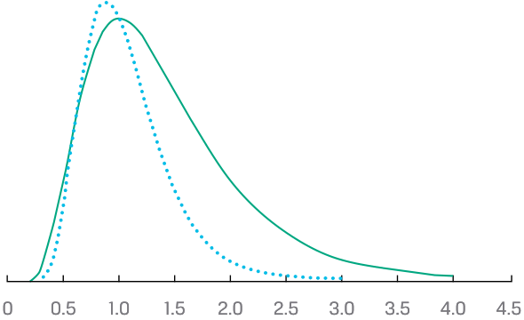
Chú thích hình ảnh: Đồ thị biểu diễn hàm mật độ xác suất của hai phân phối log-chuẩn với trục hoành từ 0 đến 4.5, minh họa đặc tính chặn dưới tại 0 và đuôi lệch phải.
Like the normal distribution, the lognormal distribution is completely described by two parameters. Unlike many other distributions, a lognormal distribution is defined in terms of the parameters of a different distribution. The two parameters of a lognormal distribution are the mean and standard deviation (or variance) of its associated normal distribution: the mean and variance of ln Y , given that Y is lognormal. So, we must keep track of two sets of means and standard deviations (or variances): (1) the mean and standard deviation (or variance) of the associated normal distribution (these are the parameters) and (2) the mean and standard deviation (or variance) of the lognormal variable itself.
Giống như phân phối chuẩn, phân phối log-chuẩn được mô tả hoàn toàn bởi hai tham số (parameters). Không giống như nhiều phân phối khác, một phân phối log-chuẩn được định nghĩa theo các tham số của một phân phối khác. Hai tham số của phân phối log-chuẩn là giá trị trung bình (mean) và độ lệch chuẩn (standard deviation – hoặc phương sai, variance) của phân phối chuẩn liên kết với nó: giá trị trung bình và phương sai của $\ln Y$, biết rằng $Y$ là biến log-chuẩn. Do đó, chúng ta phải theo dõi hai tập hợp giá trị trung bình và độ lệch chuẩn (hoặc phương sai): (1) giá trị trung bình và độ lệch chuẩn (hoặc phương sai) của phân phối chuẩn liên kết (đây là các tham số) và (2) giá trị trung bình và độ lệch chuẩn (hoặc phương sai) của chính biến log-chuẩn đó.
To illustrate this relationship, we simulated 1,000 scenarios of yearly asset returns, assuming that returns are normally distributed with 7 percent mean and 12 percent standard deviation. For each scenario i , we converted the simulated continuously compounded returns ( ri ) to future asset prices with the formula Price(1 year later) i = USD1 × exp( ri ), where exp is the exponential function and assuming that the asset’s price is USD1 today. In Exhibit 2, Panel A shows the distribution of the simulated returns together with the fitted normal pdf, whereas Panel B shows the distribution of the corresponding future asset prices together with the fitted lognormal pdf. Again, note that the lognormal distribution of future asset prices is bounded below by 0 and has a long right tail.
Để minh họa mối quan hệ này, chúng tôi đã mô phỏng 1.000 kịch bản tỷ suất sinh lợi tài sản hàng năm, giả định rằng tỷ suất sinh lợi có phân phối chuẩn với giá trị trung bình 7% và độ lệch chuẩn 12%. Đối với mỗi kịch bản $i$, chúng tôi chuyển đổi tỷ suất sinh lợi ghép lãi liên tục mô phỏng ($r_i$) thành giá tài sản tương lai bằng công thức $\text{Giá (1 năm sau)}_i = \text{USD } 1 \times \exp(r_i)$, trong đó $\exp$ là hàm mũ và giả định rằng giá tài sản ngày hôm nay là 1 USD. Trong Minh họa 2, Bảng A hiển thị phân phối của các tỷ suất sinh lợi mô phỏng cùng với hàm mật độ xác suất (pdf) chuẩn khớp nối, trong khi Bảng B hiển thị phân phối của giá tài sản tương lai tương ứng cùng với hàm pdf log-chuẩn khớp nối. Một lần nữa, hãy lưu ý rằng phân phối log-chuẩn của giá tài sản tương lai bị chặn dưới bởi 0 và có đuôi bên phải dài.
Exhibit 2: Simulated Returns (Normal PDF) and Asset Prices (Lognormal PDF)
Minh họa 2: Tỷ suất sinh lợi Mô phỏng (PDF Chuẩn) và Giá Tài sản (PDF Log-chuẩn) (Exhibit 2: Simulated Returns (Normal PDF) and Asset Prices (Lognormal PDF))
A. Normal PDF
A. Hàm mật độ xác suất chuẩn (Normal PDF)
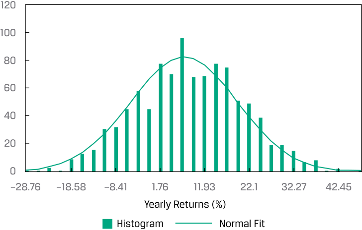
Chú thích hình ảnh: Bảng A biểu diễn Biểu đồ tần suất (Histogram) và Đường khớp chuẩn (Normal Fit) của Tỷ suất sinh lợi hàng năm (Yearly Returns (%)) từ -28.76% đến 42.45%.
B. Lognormal PDF
B. Hàm mật độ xác suất log-chuẩn (Lognormal PDF)
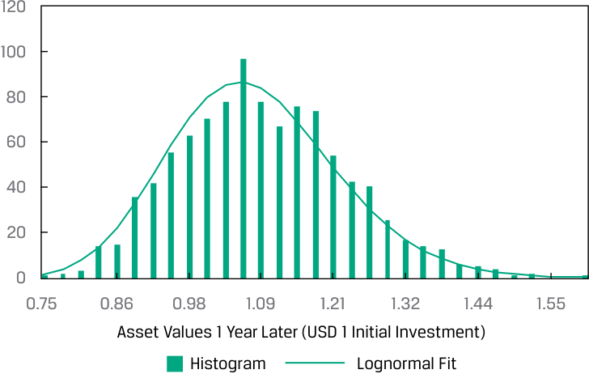
Chú thích hình ảnh: Bảng B biểu diễn Biểu đồ tần suất (Histogram) và Đường khớp log-chuẩn (Lognormal Fit) của Giá trị tài sản sau 1 năm (Asset Values 1 Year Later - Đầu tư ban đầu 1 USD) từ 0.75 đến 1.55.
The expressions for the mean and variance of the lognormal variable are challenging. Suppose a normal random variable X has expected value μ and variance σ2 . Define Y = exp( X ). Remember that the operation indicated by exp( X ) or eX (where e ≈ 2.7183) is the opposite operation from taking logs. Because ln Y = ln [exp( X )] = X is normal (we assume X is normal), Y is lognormal. What is the expected value of Y = exp( X )? A guess might be that the expected value of Y is exp( μ ). The expected value is actually exp( μ + 0.50 σ2 ), which is larger than exp( μ ) by a factor of exp(0.50 σ2 ) > 1. To get some insight into this concept, think of what happens if we increase σ2 . The distribution spreads out; it can spread upward, but it cannot spread downward past 0. As a result, the center of its distribution is pushed to the right: The distribution’s mean increases. The expressions for the mean and variance of a lognormal variable are summarized below, where μ and σ2 are the mean and variance of the associated normal distribution (refer to these expressions as needed, rather than memorizing them):
Các biểu thức tính giá trị trung bình và phương sai của biến log-chuẩn khá phức tạp. Giả sử một biến ngẫu nhiên chuẩn $X$ có giá trị kỳ vọng $\mu$ và phương sai $\sigma^2$. Định nghĩa $Y = \exp(X)$. Hãy nhớ rằng phép toán được biểu thị bởi $\exp(X)$ hoặc $e^X$ (trong đó $e \approx 2.7183$) là phép toán ngược lại với việc lấy logarit. Bởi vì $\ln Y = \ln[\exp(X)] = X$ có phân phối chuẩn (chúng ta giả định $X$ có phân phối chuẩn), nên $Y$ có phân phối log-chuẩn. Giá trị kỳ vọng của $Y = \exp(X)$ là bao nhiêu? Một phỏng đoán có thể là giá trị kỳ vọng của $Y$ bằng $\exp(\mu)$. Thực tế, giá trị kỳ vọng là $\exp(\mu + 0.50\sigma^2)$, lớn hơn $\exp(\mu)$ một hệ số là $\exp(0.50\sigma^2) > 1$. Để hiểu sâu hơn về khái niệm này, hãy nghĩ xem điều gì sẽ xảy ra nếu chúng ta tăng $\sigma^2$. Phân phối sẽ trải rộng ra; nó có thể mở rộng lên phía trên, nhưng không thể mở rộng xuống phía dưới vượt quá 0. Kết quả là, tâm của phân phối bị đẩy sang bên phải: Giá trị trung bình của phân phối tăng lên. Các biểu thức tính giá trị trung bình và phương sai của một biến log-chuẩn được tóm tắt dưới đây, trong đó $\mu$ và $\sigma^2$ là giá trị trung bình và phương sai của phân phối chuẩn liên kết (hãy tham khảo các biểu thức này khi cần thiết thay vì học thuộc lòng):
■ Mean ( μL ) of a lognormal random variable = exp( μ + 0.50 σ2 ).
- Giá trị trung bình ($\mu_L$) của một biến ngẫu nhiên log-chuẩn $= \exp(\mu + 0.50\sigma^2)$.
- Variance ( σL2 ) of a lognormal random variable = exp(2 μ + σ2 ) × [exp( σ2 ) − 1].
- Phương sai ($\sigma_L^2$) của một biến ngẫu nhiên log-chuẩn $= \exp(2\mu + \sigma^2) \times [\exp(\sigma^2) - 1]$.
Continuously Compounded Rates of Return
Tỷ suất sinh lợi Ghép lãi Liên tục (Continuously Compounded Rates of Return)
We now explore the relationship between the distribution of stock return and stock price. In this section, we show that if a stock’s continuously compounded return is normally distributed, then future stock price is necessarily lognormally distributed. Furthermore, we show that stock price may be well described by the lognormal distribution even when continuously compounded returns do not follow a normal distribution. These results provide the theoretical foundation for using the lognormal distribution to model asset prices.
Bây giờ chúng ta khám phá mối quan hệ giữa phân phối của tỷ suất sinh lợi cổ phiếu và giá cổ phiếu. Trong phần này, chúng ta chứng minh rằng nếu tỷ suất sinh lợi ghép lãi liên tục của một cổ phiếu có phân phối chuẩn, thì giá cổ phiếu trong tương lai tất yếu sẽ có phân phối log-chuẩn. Hơn nữa, chúng ta chỉ ra rằng giá cổ phiếu có thể được mô tả tốt bởi phân phối log-chuẩn ngay cả khi tỷ suất sinh lợi ghép lãi liên tục không tuân theo phân phối chuẩn. Những kết quả này cung cấp nền tảng lý thuyết cho việc sử dụng phân phối log-chuẩn để mô hình hóa giá tài sản.
Showing that the stock price at some future time T , PT , equals the current stock price, P 0, multiplied by e raised to power r0,T , the continuously compounded return from 0 to T :
Biểu diễn giá cổ phiếu tại một thời điểm tương lai $T$, $P_T$, bằng giá cổ phiếu hiện tại, $P_0$, nhân với $e$ lũy thừa $r_{0,T}$, tức tỷ suất sinh lợi ghép lãi liên tục từ thời điểm $0$ đến $T$:
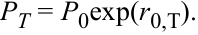
We showed in an earlier lesson that r 0,T, the continuously compounded return to time T , is the sum of the one-period continuously compounded returns, as follows:
Chúng ta đã chỉ ra trong một bài học trước rằng $r_{0,T}$, tỷ suất sinh lợi ghép lãi liên tục đến thời điểm $T$, là tổng của các tỷ suất sinh lợi ghép lãi liên tục trong một kỳ (one-period continuously compounded returns), như sau:
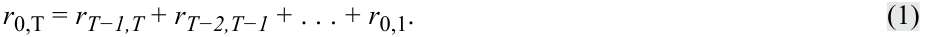
If these shorter-period returns are normally distributed, then r 0,T is normally distributed (given certain assumptions) or approximately normally distributed (not making those assumptions). As PT is proportional to the log of a normal random variable, PT is lognormal.
Nếu các tỷ suất sinh lợi kỳ ngắn hơn này có phân phối chuẩn, thì $r_{0,T}$ có phân phối chuẩn (với một số giả định nhất định) hoặc xấp xỉ phân phối chuẩn (nếu không đưa ra các giả định đó). Vì $P_T$ tỷ lệ với hàm mũ của một biến ngẫu nhiên chuẩn (logarit của $P_T$ là biến ngẫu nhiên chuẩn), nên $P_T$ có phân phối log-chuẩn.
A key assumption in many investment applications is that returns are independently and identically distributed (i.i.d.). Independence captures the proposition that investors cannot predict future returns using past returns. Identical distribution captures the assumption of stationarity, a property implying that the mean and variance of return do not change from period to period.
Một giả định quan trọng trong nhiều ứng dụng đầu tư là các tỷ suất sinh lợi có phân phối độc lập và đồng nhất (independently and identically distributed – i.i.d.). Tính độc lập (independence) phản ánh mệnh đề rằng các nhà đầu tư không thể dự đoán tỷ suất sinh lợi tương lai bằng cách sử dụng tỷ suất sinh lợi trong quá khứ. Phân phối đồng nhất (identical distribution) phản ánh giả định về tính dừng (stationarity), một tính chất ngụ ý rằng giá trị trung bình và phương sai của tỷ suất sinh lợi không thay đổi từ kỳ này sang kỳ khác.
Assume that the one-period continuously compounded returns (such as r 0,1) are i.i.d. random variables with mean μ and variance σ2 (but making no normality or other distributional assumption). Then,
Giả sử rằng các tỷ suất sinh lợi ghép lãi liên tục một kỳ (chẳng hạn như $r_{0,1}$) là các biến ngẫu nhiên i.i.d. với giá trị trung bình $\mu$ và phương sai $\sigma^2$ (nhưng không đưa ra giả định về tính chuẩn hay phân phối nào khác). Khi đó,
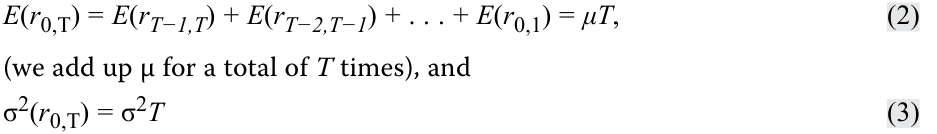
(as a consequence of the independence assumption).
(như một hệ quả của giả định độc lập).
The variance of the T holding period continuously compounded return is T multiplied by the variance of the one-period continuously compounded return; also, σ( r 0,T) = σ √ T_ . If the one-period continuously compounded returns on the right-hand side of Equation 1 are normally distributed, then the T holding period continuously compounded return, r 0,T, is also normally distributed with mean μT and variance σ2 T . This is because a linear combination of normal random variables is also a normal random variable.
Phương sai của tỷ suất sinh lợi ghép lãi liên tục trong thời kỳ nắm giữ $T$ bằng $T$ nhân với phương sai của tỷ suất sinh lợi ghép lãi liên tục một kỳ; ngoài ra, $\sigma(r_{0,T}) = \sigma\sqrt{T}$. Nếu các tỷ suất sinh lợi ghép lãi liên tục một kỳ ở vế phải của Phương trình 1 có phân phối chuẩn, thì tỷ suất sinh lợi ghép lãi liên tục trong thời kỳ nắm giữ $T$, $r_{0,T}$, cũng có phân phối chuẩn với giá trị trung bình $\mu T$ và phương sai $\sigma^2 T$. Điều này là do một tổ hợp tuyến tính của các biến ngẫu nhiên chuẩn cũng là một biến ngẫu nhiên chuẩn.
Even if the one-period continuously compounded returns are not normal, their sum, r 0,T, is approximately normal according to the central limit theorem. Now compare PT = P 0exp( r 0,T) to Y = exp( X ), where X is normal and Y is lognormal (as we discussed previously). Clearly, we can model future stock price PT as a lognormal random variable because r 0,T should be at least approximately normal . This assumption of normally distributed returns is the basis in theory for the lognormal distribution as a model for the distribution of prices of shares and other financial assets.
Ngay cả khi các tỷ suất sinh lợi ghép lãi liên tục một kỳ không có phân phối chuẩn, tổng của chúng, $r_{0,T}$, vẫn xấp xỉ chuẩn theo định lý giới hạn trung tâm (central limit theorem). Bây giờ hãy so sánh $P_T = P_0\exp(r_{0,T})$ với $Y = \exp(X)$, trong đó $X$ có phân phối chuẩn và $Y$ có phân phối log-chuẩn (như chúng ta đã thảo luận trước đó). Rõ ràng, chúng ta có thể mô hình hóa giá cổ phiếu tương lai $P_T$ như một biến ngẫu nhiên log-chuẩn bởi vì $r_{0,T}$ ít nhất phải xấp xỉ chuẩn. Giả định về tỷ suất sinh lợi có phân phối chuẩn này là cơ sở lý thuyết để sử dụng phân phối log-chuẩn làm mô hình cho phân phối giá của cổ phiếu và các tài sản tài chính khác.
Continuously compounded returns play a role in many asset pricing models, as well as in risk management. Volatility measures the standard deviation of the continuously compounded returns on the underlying asset; by convention, it is stated as an annualized measure. In practice, we often estimate volatility using a historical series of continuously compounded daily returns. We gather a set of daily holding period returns, convert them into continuously compounded daily returns and then compute the standard deviation of the continuously compounded daily returns and annualize that number using Equation 3.
Tỷ suất sinh lợi ghép lãi liên tục đóng vai trò trong nhiều mô hình định giá tài sản, cũng như trong quản trị rủi ro. Độ biến động (Volatility) đo lường độ lệch chuẩn của tỷ suất sinh lợi ghép lãi liên tục trên tài sản cơ sở; theo quy ước, nó được biểu thị dưới dạng thước đo chuẩn hóa theo năm (annualized measure). Trên thực tế, chúng ta thường ước tính độ biến động bằng cách sử dụng một chuỗi lịch sử các tỷ suất sinh lợi hàng ngày ghép lãi liên tục. Chúng ta thu thập một tập hợp các tỷ suất sinh lợi thời kỳ nắm giữ hàng ngày, chuyển đổi chúng thành tỷ suất sinh lợi hàng ngày ghép lãi liên tục và sau đó tính độ lệch chuẩn của các tỷ suất sinh lợi hàng ngày ghép lãi liên tục rồi chuẩn hóa con số đó theo năm bằng Phương trình 3.
Annualizing is typically done based on 250 days in a year, the approximate number of business days that financial markets are typically open for trading. Thus, if daily volatility were 0.01, we would state volatility (on an annual basis) as 0.01 √_ 250 = 0.1581 . Example 1 illustrates the estimation of volatility for the shares of Astra International.
Việc chuẩn hóa theo năm (annualizing) thường được thực hiện dựa trên cơ sở 250 ngày trong một năm, tức số ngày làm việc xấp xỉ mà các thị trường tài chính thường mở cửa giao dịch. Do đó, nếu độ biến động hàng ngày là $0.01$, chúng ta sẽ biểu thị độ biến động (trên cơ sở hàng năm) là $0.01\sqrt{250} = 0.1581$. Ví dụ 1 minh họa việc ước tính độ biến động cho cổ phiếu của Astra International.
EXAMPLE 1
VÍ DỤ 1 (EXAMPLE 1)
Volatility of Share Price
Độ biến động của Giá Cổ phiếu (Volatility of Share Price)
Suppose you are researching Astra International (Indonesia Stock Exchange: ASII) and are interested in Astra’s price action in a week in which international economic news had significantly affected the Indonesian stock market. You decide to use volatility as a measure of the variability of Astra shares during that week. Exhibit 3 shows closing prices during that week.
Giả sử bạn đang nghiên cứu công ty Astra International (Sở Giao dịch Chứng khoán Indonesia: ASII) và quan tâm đến biến động giá của Astra trong một tuần mà tin tức kinh tế quốc tế đã ảnh hưởng đáng kể đến thị trường chứng khoán Indonesia. Bạn quyết định sử dụng độ biến động (volatility) làm thước đo mức độ biến thiên của cổ phiếu Astra trong tuần đó. Minh họa 3 cho thấy giá đóng cửa trong tuần đó.
Exhibit 3: Astra International Daily Closing Prices
Minh họa 3: Giá Đóng cửa Hàng ngày của Astra International (Exhibit 3: Astra International Daily Closing Prices)
| Day | Closing Price (Indonesian rupiah, IDR) |
|---|---|
| Monday | 6,950 |
| Tuesday | 7,000 |
| Wednesday | 6,850 |
| Thursday | 6,600 |
| Friday | 6,350 |
| Ngày (Day) | Giá Đóng cửa (Closing Price) (Rupiah Indonesia, IDR) |
|---|---|
| Thứ Hai (Monday) | 6,950 |
| Thứ Ba (Tuesday) | 7,000 |
| Thứ Tư (Wednesday) | 6,850 |
| Thứ Năm (Thursday) | 6,600 |
| Thứ Sáu (Friday) | 6,350 |
Use the data provided to do the following:
Sử dụng dữ liệu được cung cấp để thực hiện các yêu cầu sau:
- Estimate the volatility of Astra shares. (Annualize volatility on the basis of 250 trading days in a year.)
- Ước tính độ biến động của cổ phiếu Astra. (Chuẩn hóa độ biến động theo năm trên cơ sở 250 ngày giao dịch trong một năm.)
Solution:
Lời giải (Solution):
First, calculate the continuously compounded daily returns; then, find their standard deviation in the usual way. In calculating sample variance, to get sample standard deviation, the divisor is sample size minus 1.
Trước tiên, hãy tính tỷ suất sinh lợi hàng ngày ghép lãi liên tục; sau đó, tìm độ lệch chuẩn của chúng theo cách thông thường. Khi tính phương sai mẫu để suy ra độ lệch chuẩn mẫu, số chia là kích thước mẫu trừ đi 1 ($n - 1$).
ln(7,000/6,950) = 0.007168.
ln(6,850/7,000) = −0.021661. ln(6,600/6,850) = −0.037179. ln(6,350/6,600) = −0.038615. Sum = −0.090287. Mean = −0.022572. Variance = 0.000452.
Standard deviation = 0.021261.
The standard deviation of continuously compounded daily returns is _ 0.021261. Equation 3 states that σ ˆ( r 0, T ) = σ ˆ √ T . In this example, σ ˆ is the sample standard deviation of one-period continuously compounded returns. Thus, σ ˆ refers to 0.021261. We want to annualize, so the horizon T corresponds to one year. Because σ ˆ is in days, we set T equal to the number of trading days in a year (250).
Độ lệch chuẩn của tỷ suất sinh lợi hàng ngày ghép lãi liên tục là $0.021261$. Phương trình 3 phát biểu rằng $\hat{\sigma}(r_{0,T}) = \hat{\sigma}\sqrt{T}$. Trong ví dụ này, $\hat{\sigma}$ là độ lệch chuẩn mẫu của tỷ suất sinh lợi ghép lãi liên tục một kỳ. Do đó, $\hat{\sigma}$ bằng $0.021261$. Chúng ta muốn chuẩn hóa theo năm, vì vậy kỳ hạn $T$ tương ứng với một năm. Bởi vì $\hat{\sigma}$ được tính theo ngày, chúng ta đặt $T$ bằng số ngày giao dịch trong một năm ($250$).
Therefore, we find that annualized volatility for Astra stock that week was 33.6 percent, calculated as 0.021261 √_ 250 = 0.336165 .
Do đó, chúng ta tìm được độ biến động chuẩn hóa theo năm của cổ phiếu Astra trong tuần đó là $33.6\%$, được tính bằng $0.021261\sqrt{250} = 0.336165$.
- Calculate an estimate of the expected continuously compounded annual return for Astra.
- Tính toán ước lượng cho tỷ suất sinh lợi hàng năm ghép lãi liên tục kỳ vọng của Astra.
Solution:
Lời giải (Solution):
Note that the sample mean, −0.022572 (from the Solution to 1), is a sample estimate of the mean, μ , of the continuously compounded one-period or daily returns. The sample mean can be translated into an estimate of the expected continuously compounded annual return using Equation 2, μ ˆ T = − 0.022572 ( 250 ) (using 250 to be consistent with the calculation of volatility).
Lưu ý rằng trung bình mẫu, $-0.022572$ (từ Lời giải câu 1), là một ước lượng mẫu của giá trị trung bình $\mu$ của tỷ suất sinh lợi ghép lãi liên tục một kỳ hoặc hàng ngày. Trung bình mẫu có thể được quy đổi thành ước lượng của tỷ suất sinh lợi hàng năm ghép lãi liên tục kỳ vọng bằng cách sử dụng Phương trình 2, $\hat{\mu}T = -0.022572(250) = -5.643$ hay $-564.3\%$ (sử dụng 250 để nhất quán với phép tính độ biến động).
- Discuss why it may not be prudent to use the sample mean daily return to estimate the expected continuously compounded annual return for Astra.
- Thảo luận lý do tại sao có thể không thận trọng khi sử dụng tỷ suất sinh lợi trung bình mẫu hàng ngày để ước tính tỷ suất sinh lợi hàng năm ghép lãi liên tục kỳ vọng cho Astra.
Solution:
Lời giải (Solution):
Four daily return observations are far too few to estimate expected returns. Further, the variability in the daily returns overwhelms any information about expected return in a series this short.
Bốn quan sát tỷ suất sinh lợi hàng ngày là quá ít để ước tính tỷ suất sinh lợi kỳ vọng. Hơn nữa, sự biến thiên trong tỷ suất sinh lợi hàng ngày làm lu mờ bất kỳ thông tin nào về tỷ suất sinh lợi kỳ vọng trong một chuỗi dữ liệu ngắn như vậy.
- Identify the probability distribution for Astra share prices if continuously compounded daily returns follow the normal distribution.
- Xác định phân phối xác suất cho giá cổ phiếu Astra nếu tỷ suất sinh lợi hàng ngày ghép lãi liên tục tuân theo phân phối chuẩn.
Solution:
Lời giải (Solution):
Astra share prices should follow the lognormal distribution if the continuously compounded daily returns on Astra shares follow the normal distribution.
Giá cổ phiếu Astra sẽ tuân theo phân phối log-chuẩn (lognormal distribution) nếu tỷ suất sinh lợi hàng ngày ghép lãi liên tục trên cổ phiếu Astra tuân theo phân phối chuẩn.
We have shown that the distribution of stock price is lognormal, given certain assumptions. Earlier we gave bullet-point expressions for the mean and variance of a lognormal random variable. In the context of a stock price, the μ ˆ and σ ˆ2 in these expressions would refer to the mean and variance of the T horizon, not the one-period, continuously compounded returns compatible with the horizon of PT .
Chúng ta đã chứng minh rằng phân phối của giá cổ phiếu là log-chuẩn với những giả định nhất định. Trước đó, chúng ta đã đưa ra các biểu thức gạch đầu dòng cho giá trị trung bình và phương sai của một biến ngẫu nhiên log-chuẩn. Trong bối cảnh giá cổ phiếu, $\hat{\mu}$ và $\hat{\sigma}^2$ trong các biểu thức này sẽ đề cập đến giá trị trung bình và phương sai của kỳ hạn $T$, chứ không phải tỷ suất sinh lợi ghép lãi liên tục một kỳ, sao cho tương thích với kỳ hạn của $P_T$.
3
3
MONTE CARLO SIMULATION
MÔ PHỎNG MONTE CARLO (MONTE CARLO SIMULATION)
describe Monte Carlo simulation and explain how it can be used in investment applications
Mô tả mô phỏng Monte Carlo và giải thích cách thức sử dụng phương pháp này trong các ứng dụng đầu tư
After gaining an understanding of probability distributions used to characterize asset prices and asset returns, we explore a technique called Monte Carlo simulation in which probability distributions play an integral role. A characteristic of Monte Carlo simulation is the generation of a very large number of random samples from a specified probability distribution or distributions to obtain the likelihood of a range of results.
Sau khi hiểu về các phân phối xác suất được sử dụng để mô tả đặc điểm của giá tài sản và tỷ suất sinh lợi tài sản, chúng ta khám phá một kỹ thuật gọi là mô phỏng Monte Carlo (Monte Carlo simulation), trong đó các phân phối xác suất đóng một vai trò không thể thiếu. Một đặc trưng của mô phỏng Monte Carlo là việc tạo ra một số lượng rất lớn các mẫu ngẫu nhiên từ một hoặc nhiều phân phối xác suất được chỉ định để thu được khả năng xảy ra của một phạm vi kết quả.
Monte Carlo simulation is widely used to estimate risk and return in investment applications. In this setting, we simulate the portfolio’s profit and loss performance for a specified time horizon, either on an asset-by-asset basis or an aggregate, portfolio basis. Repeated trials within the simulation, each trial involving a draw of random observations from a probability distribution, produce a simulated frequency distribution of portfolio returns from which performance and risk measures are derived.
Mô phỏng Monte Carlo được sử dụng rộng rãi để ước tính rủi ro và tỷ suất sinh lợi trong các ứng dụng đầu tư. Trong bối cảnh này, chúng ta mô phỏng kết quả lãi lỗ (profit and loss performance) của danh mục đầu tư cho một khung thời gian xác định, trên cơ sở từng tài sản hoặc trên cơ sở tổng hợp toàn danh mục. Các phép thử lặp đi lặp lại (repeated trials) trong mô phỏng, mỗi phép thử bao gồm một lần rút các quan sát ngẫu nhiên từ một phân phối xác suất, tạo ra một phân phối tần suất mô phỏng của tỷ suất sinh lợi danh mục đầu tư, từ đó suy ra các thước đo hiệu quả và rủi ro.
Another important use of Monte Carlo simulation in investments is as a tool for valuing complex securities for which no analytic pricing formula is available. For other securities, such as mortgage-backed securities with complex embedded options, Monte Carlo simulation is also an important modeling resource. Because we control the assumptions when we carry out a simulation, we can run a model for valuing such securities through a Monte Carlo simulation to examine the model’s sensitivity to a change in key assumptions.
Một ứng dụng quan trọng khác của mô phỏng Monte Carlo trong đầu tư là làm công cụ định giá các chứng khoán phức tạp mà không có sẵn công thức định giá giải tích (analytic pricing formula). Đối với các chứng khoán khác, chẳng hạn như chứng khoán đảm bảo bằng thế chấp (mortgage-backed securities – MBS) có các quyền chọn gắn kèm phức tạp, mô phỏng Monte Carlo cũng là một công cụ mô hình hóa quan trọng. Bởi vì chúng ta kiểm soát các giả định khi thực hiện mô phỏng, chúng ta có thể chạy một mô hình định giá các chứng khoán như vậy thông qua mô phỏng Monte Carlo để kiểm tra độ nhạy của mô hình trước sự thay đổi trong các giả định chính.
To understand the technique of Monte Carlo simulation, we present the process as a series of steps; these can be viewed as providing an overview rather than a detailed recipe for implementing a Monte Carlo simulation in its many varied applications.
Để hiểu kỹ thuật mô phỏng Monte Carlo, chúng tôi trình bày quy trình này dưới dạng một chuỗi các bước; có thể xem đây là phần tổng quan hơn là một công thức chi tiết để triển khai mô phỏng Monte Carlo trong nhiều ứng dụng đa dạng của nó.
To illustrate the steps, we use Monte Carlo simulation to value an option, contingent claim , whose value is based on some other underlying security. For this option, no analytic pricing formula is available. For our purposes, the value of this contingent claim (an Asian option), equals the difference between the underlying stock price at that maturity and the average stock price during the life of the contingent claim or USD 0, whichever is greater. For instance, if the final underlying stock price is USD 34 and the average value over the life of the claim is USD 31, the value of the contingent claim at its maturity is USD 3 (the greater of USD 34 – USD 31 = USD 3 and USD 0).
Để minh họa các bước, chúng ta sử dụng mô phỏng Monte Carlo để định giá một quyền chọn, hay quyền đòi nợ có điều kiện (contingent claim), có giá trị dựa trên một chứng khoán cơ sở khác. Đối với quyền chọn này, không có sẵn công thức định giá giải tích. Cho mục đích của chúng ta, giá trị của quyền đòi nợ có điều kiện này (một quyền chọn kiểu Á – Asian option) bằng chênh lệch giữa giá cổ phiếu cơ sở tại thời điểm đáo hạn và giá cổ phiếu trung bình trong suốt vòng đời của quyền đòi nợ có điều kiện hoặc 0 USD, tùy theo giá trị nào lớn hơn. Chẳng hạn, nếu giá cổ phiếu cơ sở cuối cùng là 34 USD và giá trị trung bình trong suốt vòng đời của quyền đòi nợ là 31 USD, thì giá trị của quyền đòi nợ có điều kiện tại thời điểm đáo hạn là 3 USD (giá trị lớn hơn giữa $\text{USD } 34 - \text{USD } 31 = \text{USD } 3$ và $\text{USD } 0$).
Assume that the maturity of the claim is one year from today; we will simulate stock prices in monthly steps over the next 12 months and will generate 1,000 scenarios to value this claim. The payoff diagram of this contingent claim security is depicted in Panel A of Exhibit 4, a histogram of simulated average and final stock prices is shown in Panel B, and a histogram of simulated payoffs of the contingent claim is presented in Panel C.
Giả sử kỳ đáo hạn của quyền đòi nợ là một năm kể từ hôm nay; chúng ta sẽ mô phỏng giá cổ phiếu theo từng bước hàng tháng trong 12 tháng tới và sẽ tạo ra 1.000 kịch bản để định giá quyền đòi nợ này. Sơ đồ giá trị nhận được (payoff diagram) của chứng khoán quyền đòi nợ có điều kiện này được mô tả trong Bảng A của Minh họa 4, biểu đồ tần suất (histogram) của giá cổ phiếu trung bình và giá cuối cùng mô phỏng được hiển thị trong Bảng B, và biểu đồ tần suất của các giá trị nhận được (payoffs) mô phỏng của quyền đòi nợ có điều kiện được trình bày trong Bảng C.
The payoff diagram (Panel A) is a snapshot of the contingent claim at maturity. If the stock’s final price is less than or equal to its average over the life of the contingent claim, then the payoff would be zero. However, if the final price exceeds the average price, the payoff is equal to this difference. Panel B shows histograms of the simulated
Sơ đồ giá trị nhận được (Bảng A) là bức tranh tổng quan của quyền đòi nợ có điều kiện tại thời điểm đáo hạn. Nếu giá cuối cùng của cổ phiếu nhỏ hơn hoặc bằng giá trung bình của nó trong suốt vòng đời của quyền đòi nợ có điều kiện, thì giá trị nhận được sẽ bằng 0. Tuy nhiên, nếu giá cuối cùng vượt quá giá trung bình, giá trị nhận được sẽ bằng khoản chênh lệch này. Bảng B hiển thị biểu đồ tần suất của giá cổ phiếu cuối cùng và giá trung bình mô phỏng.
final and average stock prices. Note that the simulated final price distribution is wider than the simulated average price distribution. Also, note that the contingent claim’s value depends on the difference between the final and average stock prices, which cannot be directly inferred from these histograms.
Lưu ý rằng phân phối giá cuối cùng mô phỏng rộng hơn phân phối giá trung bình mô phỏng. Đồng thời, lưu ý rằng giá trị của quyền đòi nợ có điều kiện phụ thuộc vào chênh lệch giữa giá cổ phiếu cuối cùng và giá cổ phiếu trung bình, điều không thể suy ra trực tiếp từ các biểu đồ tần suất này.
Exhibit 4: Payoff Diagram, Histogram of Simulated Average, and Final Stock Prices, and Histogram of Simulated Payoffs for Contingent Claim
Minh họa 4: Sơ đồ Giá trị nhận được, Biểu đồ tần suất Giá Cổ phiếu Trung bình và Cuối cùng Mô phỏng, và Biểu đồ tần suất Giá trị nhận được Mô phỏng của Quyền đòi nợ có điều kiện (Exhibit 4: Payoff Diagram, Histogram of Simulated Average, and Final Stock Prices, and Histogram of Simulated Payoffs for Contingent Claim)
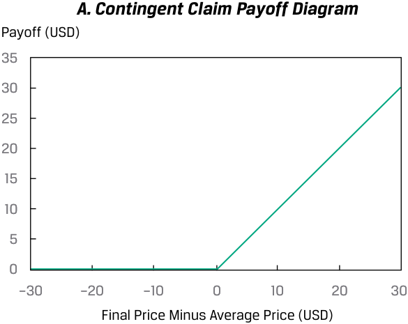
Chú thích hình ảnh: Bảng A. Sơ đồ giá trị nhận được của quyền đòi nợ có điều kiện (Contingent Claim Payoff Diagram). Trục tung: Giá trị nhận được (Payoff (USD)); Trục hoành: Giá cuối cùng trừ Giá trung bình (Final Price Minus Average Price (USD)).
B. Histogram of Simulated Average and Final Stock Prices Number of Trials
B. Biểu đồ tần suất Giá Cổ phiếu Trung bình và Cuối cùng Mô phỏng (Histogram of Simulated Average and Final Stock Prices) – Số lượng Phép thử (Number of Trials)
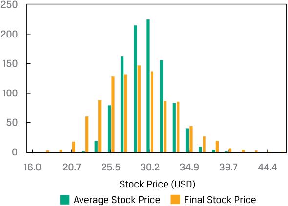
Chú thích hình ảnh: Bảng B. Trục tung: Số lượng phép thử (Number of Trials); Trục hoành: Giá cổ phiếu (Stock Price (USD)), so sánh Giá cổ phiếu trung bình (Average Stock Price) và Giá cổ phiếu cuối cùng (Final Stock Price).
C. Histogram of Simulated Contingent Claim Payoffs
C. Biểu đồ tần suất Giá trị nhận được Mô phỏng của Quyền đòi nợ có điều kiện (Histogram of Simulated Contingent Claim Payoffs)
Number of Trials
Số lượng Phép thử (Number of Trials)
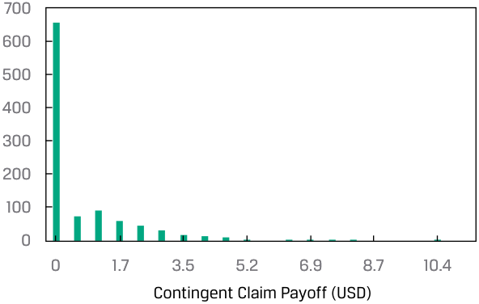
Chú thích hình ảnh: Bảng C. Trục tung: Số lượng phép thử (Number of Trials); Trục hoành: Giá trị nhận được của quyền đòi nợ có điều kiện (Contingent Claim Payoff (USD)).
Finally, Panel C shows the histogram of the contingent claim’s simulated payoffs. In 654 of 1,000 total trials, the final stock price was less than or equal to the average price, so in 65.4 percent of the trials the contingent claim paid off zero. In the remaining 34.6 percent of the trials, however, the claim paid the positive difference between the final and average prices, with the maximum payoff being USD 11.
Cuối cùng, Bảng C hiển thị biểu đồ tần suất các giá trị nhận được mô phỏng của quyền đòi nợ có điều kiện. Trong 654 trên tổng số 1.000 phép thử, giá cổ phiếu cuối cùng nhỏ hơn hoặc bằng giá trung bình, vì vậy trong 65.4% số phép thử, quyền đòi nợ có điều kiện có giá trị nhận được bằng 0. Tuy nhiên, trong 34.6% số phép thử còn lại, quyền đòi nợ trả phần chênh lệch dương giữa giá cuối cùng và giá trung bình, với mức chi trả tối đa là 11 USD.
The process flowchart in Exhibit 5 shows the steps for implementing the Monte Carlo simulation for valuing this contingent claim. Steps 1 through 3 of the process describe specifying the simulation; Steps 4 through 6 describe running the simulation.
Lưu đồ quy trình trong Minh họa 5 cho thấy các bước triển khai mô phỏng Monte Carlo để định giá quyền đòi nợ có điều kiện này. Các bước từ 1 đến 3 của quy trình mô tả việc thiết lập đặc tả mô phỏng (specifying the simulation); Các bước từ 4 đến 6 mô tả việc chạy mô phỏng (running the simulation).
Exhibit 5: Steps in Implementing the Monte Carlo Simulation
Minh họa 5: Các bước Triển khai Mô phỏng Monte Carlo (Exhibit 5: Steps in Implementing the Monte Carlo Simulation)
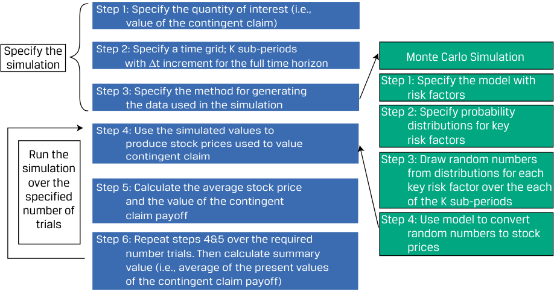
Chú thích hình ảnh: - Thiết lập mô phỏng (Specify the simulation): - Bước 1: Xác định đại lượng quan tâm (tức giá trị của quyền đòi nợ có điều kiện). - Bước 2: Xác định lưới thời gian; $K$ kỳ con với bước nhảy $\Delta t$ cho toàn bộ khung thời gian. - Bước 3: Xác định phương pháp tạo dữ liệu dùng trong mô phỏng. - Chạy mô phỏng qua số phép thử xác định (Run the simulation over the specified number of trials): - Bước 4: Sử dụng các giá trị mô phỏng để tạo ra giá cổ phiếu dùng để định giá quyền đòi nợ có điều kiện. (Chi tiết Mô phỏng Monte Carlo cho Bước 3 & 4: Bước 1 nhỏ: Xác định mô hình với các yếu tố rủi ro -> Bước 2 nhỏ: Xác định phân phối xác suất cho các yếu tố rủi ro chính -> Bước 3 nhỏ: Rút các số ngẫu nhiên từ các phân phối cho mỗi yếu tố rủi ro chính qua từng kỳ trong $K$ kỳ con -> Bước 4 nhỏ: Sử dụng mô hình để chuyển đổi các số ngẫu nhiên thành giá cổ phiếu). - Bước 5: Tính giá cổ phiếu trung bình và giá trị nhận được của quyền đòi nợ có điều kiện. - Bước 6: Lặp lại bước 4 & 5 qua số lượng phép thử yêu cầu. Sau đó tính giá trị tổng hợp (tức trung bình của các giá trị hiện tại của khoản chi trả quyền đòi nợ có điều kiện).
The mechanics of implementing the Monte Carlo simulation for valuing the contingent claim using the six-step process are described as follows:
Cơ chế triển khai mô phỏng Monte Carlo để định giá quyền đòi nợ có điều kiện bằng quy trình sáu bước được mô tả như sau:
1. Specify the quantity of interest in terms of underlying variables. The quantity of interest is the contingent claim value, and the underlying variable is the stock price. Then, specify the starting value(s) of the underlying variable(s).
1. Xác định đại lượng quan tâm theo các biến cơ sở. Đại lượng quan tâm là giá trị quyền đòi nợ có điều kiện, và biến cơ sở là giá cổ phiếu. Sau đó, xác định (các) giá trị khởi đầu của (các) biến cơ sở.
- We use CiT to represent the value of the claim at maturity, T . The subscript i in CiT indicates that CiT is a value resulting from the i th simulation trial , each simulation trial involving a drawing of random values (an iteration of Step 4).
- Chúng ta sử dụng $C_{iT}$ để biểu thị giá trị của quyền đòi nợ tại thời điểm đáo hạn $T$. Chỉ số dưới $i$ trong $C_{iT}$ cho biết $C_{iT}$ là giá trị thu được từ phép thử mô phỏng (simulation trial) thứ $i$, mỗi phép thử mô phỏng bao gồm một lần rút các giá trị ngẫu nhiên (một lần lặp của Bước 4).
2. Specify a time grid. Take the horizon in terms of calendar time and split it into a number of subperiods—say, K in total. Calendar time divided by the number of subperiods, K , is the time increment, Δ t . In our example, calendar time is one year and K is 12, so Δ t equals one month.
2. Xác định lưới thời gian (time grid). Lấy khung thời gian theo lịch và chia nhỏ thành một số kỳ con—giả sử tổng cộng là $K$ kỳ. Thời gian theo lịch chia cho số kỳ con $K$ là bước nhảy thời gian, $\Delta t$. Trong ví dụ của chúng ta, thời gian theo lịch là một năm và $K$ bằng 12, vì vậy $\Delta t$ bằng một tháng.
3. Specify the method for generating the data used in the simulation. This step will require that distributional assumptions be made for the key risk factors that drive the underlying variables. For example, stock price is the underlying variable for the contingent claim, so we need a model for stock price movement, effectively a period return. We choose the following model for changes in stock price, where Zk stands for the standard normal random variable:
3. Xác định phương pháp tạo dữ liệu được sử dụng trong mô phỏng. Bước này đòi hỏi phải đưa ra các giả định phân phối cho các yếu tố rủi ro chính dẫn dắt các biến cơ sở. Ví dụ, giá cổ phiếu là biến cơ sở cho quyền đòi nợ có điều kiện, vì vậy chúng ta cần một mô hình cho biến động giá cổ phiếu, thực chất là tỷ suất sinh lợi trong kỳ. Chúng ta chọn mô hình sau đây cho những thay đổi trong giá cổ phiếu, trong đó $Z_k$ đại diện cho biến ngẫu nhiên chuẩn hóa (standard normal random variable):
ΔStock price = ( μ × Prior stock price × Δ t ) + ( σ × Prior stock price × Zk ).
The term Zk is the key risk factor in the simulation. Through our choice of μ (mean) and σ (standard deviation), we control the distribution of the stock price variable. Although this example has one key risk factor, a given simulation may have multiple key risk factors.
Đại lượng $Z_k$ là yếu tố rủi ro chính trong mô phỏng. Thông qua việc lựa chọn $\mu$ (giá trị trung bình) và $\sigma$ (độ lệch chuẩn), chúng ta kiểm soát phân phối của biến giá cổ phiếu. Mặc dù ví dụ này có một yếu tố rủi ro chính, một mô phỏng bất kỳ có thể có nhiều yếu tố rủi ro chính.
Then, using a computer program or spreadsheet function, draw K random values of each risk factor. In our example, the spreadsheet function would produce a draw of K (= 12) values of the standard normal variable Zk : Z1, Z2, Z3, . . ., ZK . We will discuss generating standard normal random numbers (or, in fact, random numbers with any kind of distribution) after describing the sequence of simulation steps.
Sau đó, sử dụng chương trình máy tính hoặc hàm bảng tính, hãy rút $K$ giá trị ngẫu nhiên của từng yếu tố rủi ro. Trong ví dụ của chúng ta, hàm bảng tính sẽ tạo ra một lần rút gồm $K$ ($= 12$) giá trị của biến chuẩn hóa $Z_k$: $Z_1, Z_2, Z_3, \dots, Z_K$. Chúng ta sẽ thảo luận về việc tạo các số ngẫu nhiên chuẩn hóa (hoặc thực tế là các số ngẫu nhiên có bất kỳ loại phân phối nào) sau khi mô tả trình tự các bước mô phỏng.
4. Use the simulated values to produce stock prices used to value the contingent claim. This step will convert the standard normal random numbers generated in Step 3 into stock price changes (ΔStock price) by using the model of stock price dynamics from Step 3. The result is K observations on possible changes in stock price over the K subperiods (remember, K = 12). An additional calculation is needed to convert those changes into a sequence of K stock prices, with the initial stock price as the starting value over the K subperiods. This is an important step: we rely on the distributional assumptions of the Monte Carlo simulation to randomly create a very large number of stock price processes.
4. Sử dụng các giá trị mô phỏng để tạo ra giá cổ phiếu dùng để định giá quyền đòi nợ có điều kiện. Bước này sẽ chuyển đổi các số ngẫu nhiên chuẩn hóa được tạo ở Bước 3 thành các thay đổi giá cổ phiếu ($\Delta\text{Giá cổ phiếu}$) bằng cách sử dụng mô hình động thái giá cổ phiếu từ Bước 3. Kết quả là $K$ quan sát về những thay đổi có thể xảy ra của giá cổ phiếu trong $K$ kỳ con (hãy nhớ, $K = 12$). Cần thêm một phép tính nữa để chuyển đổi những thay đổi đó thành một chuỗi gồm $K$ mức giá cổ phiếu, với giá cổ phiếu ban đầu làm giá trị khởi đầu qua $K$ kỳ con. Đây là một bước quan trọng: chúng ta dựa vào các giả định phân phối của mô phỏng Monte Carlo để tạo ngẫu nhiên một số lượng rất lớn các quá trình biến động giá cổ phiếu.
5. Calculate the average stock price and the value of the contingent claim. This calculation produces the average stock price during the life of the contingent claim (the sum of K stock prices divided by K ). Then, compute the value of the contingent claim at maturity, CiT , and then calculate its present value, Ci0 , by discounting this terminal value using an appropriate interest rate as of today. (The subscript i in Ci0 stands for the i th simulation trial, as it does in CiT .) We have now completed one simulation trial.
5. Tính giá cổ phiếu trung bình và giá trị của quyền đòi nợ có điều kiện. Phép tính này tạo ra giá cổ phiếu trung bình trong suốt vòng đời của quyền đòi nợ có điều kiện (tổng của $K$ mức giá cổ phiếu chia cho $K$). Tiếp theo, tính giá trị của quyền đòi nợ có điều kiện tại thời điểm đáo hạn, $C_{iT}$, và sau đó tính giá trị hiện tại của nó, $C_{i0}$, bằng cách chiết khấu giá trị cuối kỳ này theo một mức lãi suất phù hợp tại ngày hôm nay. (Chỉ số dưới $i$ trong $C_{i0}$ đại diện cho phép thử mô phỏng thứ $i$, giống như trong $C_{iT}$.) Bây giờ chúng ta đã hoàn thành một phép thử mô phỏng.
6. Repeat steps 4 and 5 over the required number of trials. Iteratively, go back to Step 4 until the specified number of trials, I , is completed. Finally, produce summary values and statistics for the simulation. The quantity of interest in our example is the mean value of Ci0 for the total number of simulation trials ( I = 1,000). This mean value is the Monte Carlo estimate of the value of our contingent claim.
6. Lặp lại bước 4 và bước 5 qua số lượng phép thử yêu cầu. Lặp đi lặp lại việc quay về Bước 4 cho đến khi hoàn thành số lượng phép thử được chỉ định, $I$. Cuối cùng, xuất ra các giá trị tổng hợp và thống kê cho mô phỏng. Đại lượng quan tâm trong ví dụ của chúng ta là giá trị trung bình của $C_{i0}$ cho tổng số phép thử mô phỏng ($I = 1,000$). Giá trị trung bình này là ước lượng Monte Carlo cho giá trị của quyền đòi nợ có điều kiện của chúng ta.
In Example 2, we continue with the application of Monte Carlo simulation to value another type of contingent claim.
Trong Ví dụ 2, chúng ta tiếp tục áp dụng mô phỏng Monte Carlo để định giá một loại quyền đòi nợ có điều kiện khác.
EXAMPLE 2
VÍ DỤ 2 (EXAMPLE 2)
Valuing a Lookback Contingent Claim Using Monte Carlo Simulation
Định giá Quyền đòi nợ có điều kiện Kiểu Nhìn lại (Lookback Contingent Claim) Bằng Mô phỏng Monte Carlo
- A standard lookback contingent claim on a stock has a value at maturity equal to (Value of the stock at maturity − Minimum value of stock during the life of the claim prior to maturity) or USD 0, whichever is greater. If the minimum value reached prior to maturity was USD 20.11 and the value of
- Một quyền đòi nợ có điều kiện kiểu nhìn lại (lookback contingent claim) tiêu chuẩn trên một cổ phiếu có giá trị tại thời điểm đáo hạn bằng $(\text{Giá trị cổ phiếu khi đáo hạn} - \text{Giá trị tối thiểu của cổ phiếu trong suốt vòng đời của quyền đòi nợ trước khi đáo hạn})$ hoặc $\text{USD } 0$, tùy theo giá trị nào lớn hơn. Ví dụ, nếu giá trị tối thiểu đạt được trước khi đáo hạn là $20.11\text{ USD}$ và giá trị của
the stock at maturity is USD 23, for example, the contingent claim is worth USD 23 – USD 20.11 = USD 2.89.
cổ phiếu khi đáo hạn là $23\text{ USD}$, thì quyền đòi nợ có điều kiện có giá trị là $\text{USD } 23 - \text{USD } 20.11 = \text{USD } 2.89$.
How might you use Monte Carlo simulation in valuing a lookback contingent claim?
Bạn có thể sử dụng mô phỏng Monte Carlo như thế nào trong việc định giá một quyền đòi nợ có điều kiện kiểu nhìn lại?
Solution:
Lời giải (Solution):
We previously described how to use Monte Carlo simulation to value a certain type of contingent claim. Just as we can calculate the average value of the stock over a simulation trial to value that claim, for a lookback contingent claim, we can also calculate the minimum value of the stock over a simulation trial. Then, for a given simulation trial, we can calculate the terminal value of the claim, given the minimum value of the stock for the simulation trial. We can then discount this terminal value back to the present to get the value of the claim today ( t = 0). The average of these t = 0 values over all simulation trials is the Monte Carlo simulated value of the lookback contingent claim.
Trước đó chúng ta đã mô tả cách sử dụng mô phỏng Monte Carlo để định giá một loại quyền đòi nợ có điều kiện nhất định. Cũng giống như việc chúng ta có thể tính giá trị trung bình của cổ phiếu qua một phép thử mô phỏng để định giá quyền đòi nợ đó, đối với quyền đòi nợ có điều kiện kiểu nhìn lại, chúng ta cũng có thể tính giá trị tối thiểu của cổ phiếu qua một phép thử mô phỏng. Sau đó, đối với một phép thử mô phỏng nhất định, chúng ta có thể tính giá trị cuối kỳ (terminal value) của quyền đòi nợ dựa trên giá trị tối thiểu của cổ phiếu trong phép thử mô phỏng đó. Tiếp theo, chúng ta có thể chiết khấu giá trị cuối kỳ này về hiện tại để nhận được giá trị của quyền đòi nợ ngày hôm nay ($t = 0$). Giá trị trung bình của các giá trị tại $t = 0$ này qua tất cả các phép thử mô phỏng chính là giá trị mô phỏng Monte Carlo của quyền đòi nợ có điều kiện kiểu nhìn lại.
Finally, note that Monte Carlo simulation is a complement to analytical methods. It provides only statistical estimates, not exact results. Analytical methods, where available, provide more insight into cause-and-effect relationships. However, as financial product innovations proceed, the applications for Monte Carlo simulation in investment management continue to grow.
Cuối cùng, hãy lưu ý rằng mô phỏng Monte Carlo là một sự bổ sung cho các phương pháp giải tích (analytical methods). Nó chỉ cung cấp các ước lượng thống kê chứ không phải kết quả chính xác tuyệt đối. Các phương pháp giải tích, khi có sẵn, cung cấp cái nhìn sâu sắc hơn về mối quan hệ nhân quả (cause-and-effect relationships). Tuy nhiên, khi các đổi mới sản phẩm tài chính tiếp tục diễn ra, các ứng dụng của mô phỏng Monte Carlo trong quản lý đầu tư vẫn tiếp tục phát triển.
QUESTION SET
BỘ CÂU HỎI (QUESTION SET)
- Define Monte Carlo simulation and explain its use in investment management.
- Định nghĩa mô phỏng Monte Carlo và giải thích cách sử dụng nó trong quản lý đầu tư.
Solution:
Lời giải (Solution):
A Monte Carlo simulation generates of a large number of random samples from a specified probability distribution (or distributions) to represent the role of risk in the system. Monte Carlo simulation is widely used to estimate risk and return in investment applications. In this setting, we simulate the portfolio’s profit and loss performance for a specified time horizon. Repeated trials within the simulation produce a simulated frequency distribution of portfolio returns from which performance and risk measures are derived. Another important use of Monte Carlo simulation in investments is as a tool for valuing complex securities for which no analytic pricing formula is available. It is also an important modeling resource for securities with complex embedded options.
Mô phỏng Monte Carlo tạo ra một số lượng lớn các mẫu ngẫu nhiên từ một (hoặc nhiều) phân phối xác suất được chỉ định để đại diện cho vai trò của rủi ro trong hệ thống. Mô phỏng Monte Carlo được sử dụng rộng rãi để ước tính rủi ro và tỷ suất sinh lợi trong các ứng dụng đầu tư. Trong bối cảnh này, chúng ta mô phỏng kết quả lãi lỗ của danh mục đầu tư cho một khung thời gian xác định. Các phép thử lặp lại trong mô phỏng tạo ra một phân phối tần suất mô phỏng của tỷ suất sinh lợi danh mục đầu tư, từ đó suy ra các thước đo hiệu quả và rủi ro. Một ứng dụng quan trọng khác của mô phỏng Monte Carlo trong đầu tư là làm công cụ định giá các chứng khoán phức tạp mà không có sẵn công thức định giá giải tích. Nó cũng là một công cụ mô hình hóa quan trọng đối với các chứng khoán có quyền chọn gắn kèm phức tạp.
- Compared with analytical methods, what are the strengths and weaknesses of using Monte Carlo simulation for valuing securities?
- So với các phương pháp giải tích, điểm mạnh và điểm yếu của việc sử dụng mô phỏng Monte Carlo để định giá chứng khoán là gì?
Solution:
Lời giải (Solution):
-
Strengths: Monte Carlo simulation can be used to price complex securities for which no analytic expression is available, particularly European-style options.
-
Weaknesses: Monte Carlo simulation provides only statistical estimates, not exact results. Analytic methods, when available, provide more insight into cause-and-effect relationships than does Monte Carlo simulation.
-
Điểm mạnh (Strengths): Mô phỏng Monte Carlo có thể được sử dụng để định giá các chứng khoán phức tạp mà không có sẵn biểu thức giải tích, đặc biệt là các quyền chọn kiểu Âu (European-style options).
-
Điểm yếu (Weaknesses): Mô phỏng Monte Carlo chỉ cung cấp các ước lượng thống kê chứ không phải kết quả chính xác. Các phương pháp giải tích, khi có sẵn, cung cấp cái nhìn sâu sắc hơn về mối quan hệ nhân quả so với mô phỏng Monte Carlo.
| 3. A Monte Carlo simulation can be used to: |
|---|
| A.directly provide precise valuations of call options. |
| B.simulate a process from historical records of returns. |
| C.test the sensitivity of a model to changes in assumptions—for example, on distributions of key variables. |
| Solution: |
| C is correct. A characteristic feature of Monte Carlo simulation is the gener- ation of a large number of random samples from a specified probability dis- tribution or distributions to represent the role of risk in the system. There- fore, it is very useful for investigating the sensitivity of a model to changes in assumptions—for example, on distributions of key variables. |
| 3. Mô phỏng Monte Carlo có thể được sử dụng để: |
|---|
| A. trực tiếp cung cấp các mức định giá chính xác tuyệt đối cho các quyền chọn mua (call options). |
| B. mô phỏng một quá trình từ dữ liệu lịch sử của tỷ suất sinh lợi. |
| C. kiểm tra độ nhạy của một mô hình trước những thay đổi trong các giả định—ví dụ, về phân phối của các biến số chính. |
| Lời giải (Solution): |
| C đúng. Một tính năng đặc trưng của mô phỏng Monte Carlo là việc tạo ra một số lượng lớn các mẫu ngẫu nhiên từ một hoặc nhiều phân phối xác suất được chỉ định để đại diện cho vai trò của rủi ro trong hệ thống. Do đó, nó rất hữu ích để khảo sát độ nhạy của một mô hình trước những thay đổi trong các giả định—ví dụ, về phân phối của các biến số chính. |
- A limitation of Monte Carlo simulation is: A. its failure to do “what if” analysis. B. that it requires historical records of returns. C. its inability to independently specify cause-and-effect relationships.
- Một hạn chế của mô phỏng Monte Carlo là: - A. không thực hiện được phân tích “điều gì sẽ xảy ra nếu” (“what if” analysis). - B. đòi hỏi phải có dữ liệu lịch sử của tỷ suất sinh lợi. - C. không có khả năng tự xác định một cách độc lập các mối quan hệ nhân quả (cause-and-effect relationships).
Solution: C is correct. Monte Carlo simulation is a complement to analytical methods. Monte Carlo simulation provides statistical estimates and not exact results. Analytical methods, when available, provide more insight into cause-andeffect relationships.
Lời giải (Solution): C đúng. Mô phỏng Monte Carlo là một sự bổ sung cho các phương pháp giải tích. Mô phỏng Monte Carlo cung cấp các ước lượng thống kê chứ không phải kết quả chính xác. Các phương pháp giải tích, khi có sẵn, cung cấp cái nhìn sâu sắc hơn về các mối quan hệ nhân quả.
BOOTSTRAPPING
PHƯƠNG PHÁP LẤY MẪU TỰ THÂN (BOOTSTRAPPING)
4
4
describe the use of bootstrap resampling in conducting a simulation based on observed data in investment applications
Mô tả việc sử dụng lấy mẫu lại kiểu tự thân (bootstrap resampling) khi thực hiện mô phỏng dựa trên dữ liệu quan sát được trong các ứng dụng đầu tư
Earlier, we demonstrated how to find the standard error of the sample mean, which can be computed based on the central limit theorem. We now introduce a computational tool called resampling , which repeatedly draws samples from the original observed data sample for the statistical inference of population parameters. Bootstrap , one of the most popular resampling methods, uses computer simulation for statistical inference without using an analytical formula such as a z -statistic or t -statistic.
Trước đó, chúng ta đã minh họa cách tìm sai số chuẩn của trung bình mẫu (standard error of the sample mean), có thể được tính toán dựa trên định lý giới hạn trung tâm. Bây giờ chúng ta giới thiệu một công cụ tính toán gọi là lấy mẫu lại (resampling), thực hiện rút mẫu lặp đi lặp lại từ mẫu dữ liệu quan sát ban đầu để suy luận thống kê về các tham số tổng thể. Phương pháp tự thân (Bootstrap), một trong những phương pháp lấy mẫu lại phổ biến nhất, sử dụng mô phỏng máy tính để suy luận thống kê mà không cần dùng đến công thức giải tích chẳng hạn như thống kê $z$ (z-statistic) hay thống kê $t$ (t-statistic).
The idea behind bootstrap is to mimic the process of performing random sampling from a population to construct the sampling distribution. The difference lies in the fact that we have no knowledge of what the population looks like, except for a sample with size n drawn from the population. Because a random sample offers a good representation of the population, we can simulate sampling from the population by sampling from the observed sample. In other words, the bootstrap mimics the process by treating the randomly drawn sample as if it were the population.
Ý tưởng đằng sau phương pháp bootstrap là bắt chước quá trình thực hiện lấy mẫu ngẫu nhiên từ một tổng thể để xây dựng phân phối mẫu (sampling distribution). Điểm khác biệt nằm ở chỗ chúng ta không biết tổng thể trông như thế nào, ngoại trừ một mẫu có kích thước $n$ được rút ra từ tổng thể đó. Bởi vì một mẫu ngẫu nhiên mang lại sự đại diện tốt cho tổng thể, chúng ta có thể mô phỏng việc lấy mẫu từ tổng thể bằng cách lấy mẫu từ chính mẫu quan sát được. Nói cách khác, phương pháp bootstrap bắt chước quá trình này bằng cách coi mẫu được rút ngẫu nhiên như thể chính là tổng thể.
Both the bootstrap and the Monte Carlo simulation build on repetitive sampling. Bootstrapping resamples a dataset as the true population, and infers from the sampling statistical distribution parameter values (i.e., mean, variance, skewness, and kurtosis) for the population. Monte Carlo simulation builds on generating random data with certain known statistical distribution of parameter values.
Cả phương pháp bootstrap và mô phỏng Monte Carlo đều được xây dựng dựa trên việc lấy mẫu lặp đi lặp lại. Phương pháp bootstrapping lấy mẫu lại một tập dữ liệu như thể đó là tổng thể thực sự, và suy luận từ phân phối thống kê lấy mẫu ra các giá trị tham số (tức là giá trị trung bình, phương sai, độ lệch và độ nhọn) cho tổng thể. Mô phỏng Monte Carlo được xây dựng dựa trên việc tạo dữ liệu ngẫu nhiên với phân phối thống kê đã biết trước của các giá trị tham số.
The right-hand side of Exhibit 6 illustrates the process. In bootstrap, we repeatedly draw samples from the original sample, and each resample is of the same size as the original sample. Note that each item drawn is replaced for the next draw (i.e., the identical element is put back into the group so that it can be drawn more than once). Although some items may appear several times in the resamples, other items may not appear at all.
Phía bên phải của Minh họa 6 minh họa quy trình này. Trong phương pháp bootstrap, chúng ta liên tục rút các mẫu từ mẫu ban đầu, và mỗi mẫu lấy lại (resample) có cùng kích thước với mẫu ban đầu. Lưu ý rằng mỗi phần tử được rút ra sẽ được hoàn lại cho lần rút tiếp theo (tức là phần tử giống hệt đó được đưa trở lại vào nhóm để nó có thể được rút ra nhiều hơn một lần – sampling with replacement). Mặc dù một số phần tử có thể xuất hiện nhiều lần trong các mẫu lấy lại, các phần tử khác có thể không xuất hiện lần nào.
Exhibit 6: Bootstrap Resampling
Minh họa 6: Lấy mẫu lại kiểu Tự thân (Exhibit 6: Bootstrap Resampling)
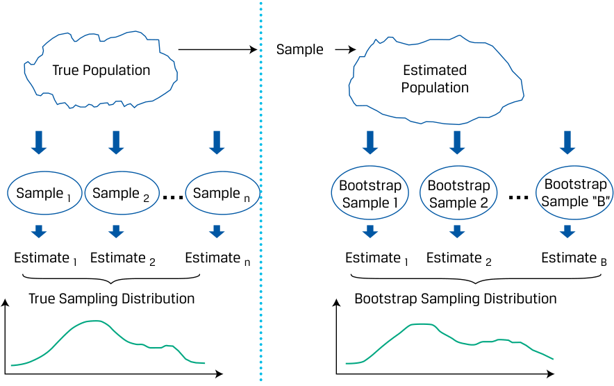
Chú thích hình ảnh: - Bên trái (Lấy mẫu truyền thống): Tổng thể thực (True Population) $\rightarrow$ Mẫu 1, Mẫu 2, ..., Mẫu $n$ $\rightarrow$ Ước lượng 1, Ước lượng 2, ..., Ước lượng $n$ $\rightarrow$ Phân phối mẫu thực (True Sampling Distribution). - Bên phải (Lấy mẫu Bootstrap): Mẫu (Sample) $\rightarrow$ Tổng thể ước tính (Estimated Population) $\rightarrow$ Mẫu Bootstrap 1, Mẫu Bootstrap 2, ..., Mẫu Bootstrap "B" $\rightarrow$ Ước lượng 1, Ước lượng 2, ..., Ước lượng B $\rightarrow$ Phân phối mẫu Bootstrap (Bootstrap Sampling Distribution).
The mechanics of implementing the simulation for valuing the contingent claim used in the previous lesson using the bootstrap differ only in the source of the random variable used. Instead of being drawn from a probability distribution, under bootstrapping, the random variable is drawn from the sample as described in the discussion related to Exhibit 6. Exhibit 7 shows the steps for the bootstrap process highlighting the differences between the bootstrap process and the Monte Carlo simulation from Exhibit 6.
Cơ chế triển khai mô phỏng để định giá quyền đòi nợ có điều kiện đã sử dụng trong bài học trước bằng phương pháp bootstrap chỉ khác ở nguồn của biến ngẫu nhiên được sử dụng. Thay vì được rút ra từ một phân phối xác suất, theo phương pháp bootstrapping, biến ngẫu nhiên được rút ra từ mẫu như được mô tả trong phần thảo luận liên quan đến Minh họa 6. Minh họa 7 cho thấy các bước của quy trình bootstrap, làm nổi bật sự khác biệt giữa quy trình bootstrap và mô phỏng Monte Carlo.
Exhibit 7: Steps in Implementing Simulation using Bootstrapping
Minh họa 7: Các bước Triển khai Mô phỏng bằng Phương pháp Bootstrapping (Exhibit 7: Steps in Implementing Simulation using Bootstrapping)
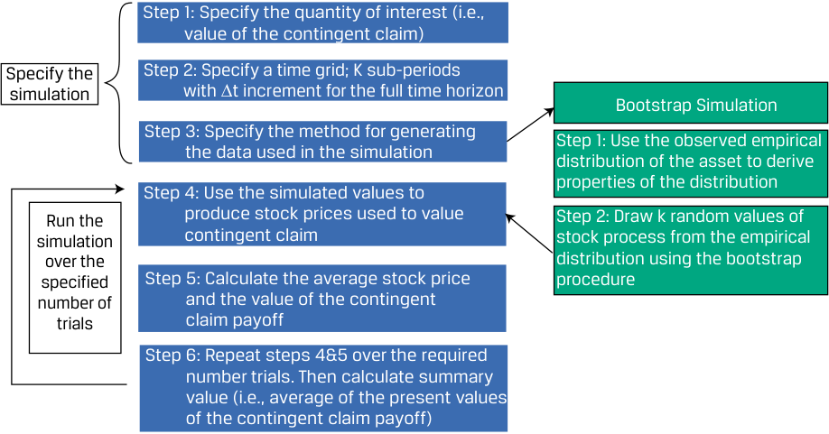
Chú thích hình ảnh: - Thiết lập mô phỏng (Specify the simulation): Bước 1, Bước 2, Bước 3 tương tự cấu trúc chung. - Mô phỏng Bootstrap (Bootstrap Simulation - chi tiết cho Bước 3 & 4): - Bước 1 nhỏ: Sử dụng phân phối thực nghiệm quan sát được (observed empirical distribution) của tài sản để suy ra các đặc tính của phân phối. - Bước 2 nhỏ: Rút $K$ giá trị ngẫu nhiên của quá trình giá cổ phiếu từ phân phối thực nghiệm bằng thủ tục bootstrap. - Chạy mô phỏng (Run the simulation): Bước 4, Bước 5, Bước 6 lặp lại và tính giá trị trung bình của các giá trị hiện tại của khoản chi trả quyền đòi nợ có điều kiện.
The steps in using bootstrap to simulate the contingent claim are then (with the first two steps and the last three steps) the same for bootstrapping as they are for the Monte Carlo simulation:
Các bước sử dụng bootstrap để mô phỏng quyền đòi nợ có điều kiện (với hai bước đầu tiên và ba bước cuối cùng) giống hệt như đối với mô phỏng Monte Carlo:
1. Specify the quantity of interest in terms of underlying variables. The quantity of interest is the contingent claim value, and the underlying variable is the stock price. Then, specify the starting value(s) of the underlying variable(s). We use CiT to represent the value of the claim at maturity, T . The subscript i in CiT indicates that CiT is a value resulting from the i th simulation trial, each simulation trial involving a drawing of random values (an iteration of Step 4).
1. Xác định đại lượng quan tâm theo các biến cơ sở. Đại lượng quan tâm là giá trị quyền đòi nợ có điều kiện, và biến cơ sở là giá cổ phiếu. Sau đó, xác định (các) giá trị khởi đầu của (các) biến cơ sở. Chúng ta sử dụng $C_{iT}$ để biểu thị giá trị của quyền đòi nợ tại thời điểm đáo hạn $T$. Chỉ số dưới $i$ trong $C_{iT}$ cho biết $C_{iT}$ là giá trị thu được từ phép thử mô phỏng thứ $i$, mỗi phép thử mô phỏng bao gồm một lần rút các giá trị ngẫu nhiên (một lần lặp của Bước 4).
2. Specify a time grid that is consistent with the periodicity of the sample observations. Take the horizon in terms of calendar time and split it into a number of subperiods—say, K in total. Calendar time divided by the number of subperiods, K , is the time increment, Δ t . In the example, calendar time was one year, and K is 12, so Δ t equals one month.
2. Xác định lưới thời gian nhất quán với định kỳ của các quan sát mẫu. Lấy khung thời gian theo lịch và chia nhỏ thành một số kỳ con—giả sử tổng cộng là $K$ kỳ. Thời gian theo lịch chia cho số kỳ con $K$ là bước nhảy thời gian, $\Delta t$. Trong ví dụ, thời gian theo lịch là một năm và $K$ là 12, vì vậy $\Delta t$ bằng một tháng.
3. Specify the method for generating the data used in the simulation. In our example, stock price is the underlying variable for the contingent claim, so we use the observed changes in stock price as our empirical distribution. We use the observed historical behavior of stock price processes: price changes or price returns.
3. Xác định phương pháp tạo dữ liệu được sử dụng trong mô phỏng. Trong ví dụ của chúng ta, giá cổ phiếu là biến cơ sở cho quyền đòi nợ có điều kiện, vì vậy chúng ta sử dụng những thay đổi quan sát được của giá cổ phiếu làm phân phối thực nghiệm (empirical distribution). Chúng ta sử dụng hành vi lịch sử quan sát được của các quá trình giá cổ phiếu: thay đổi giá hoặc tỷ suất sinh lợi giá.
4. Use the simulated values to produce stock prices used to value the contingent claim. Using a computer program or spreadsheet function, draw K random values of stock process from the empirical distribution using the bootstrap procedure. Then, convert the stock price changes (ΔStock price) from Step 3 into the stock price dynamics. The calculation is necessary to convert those changes into a sequence of K stock prices, with the initial stock price as the starting value over the K subperiods. This is an important step: we rely on the distribution of the bootstrapped trials drawn from observed, historical stock price processes.
4. Sử dụng các giá trị mô phỏng để tạo ra giá cổ phiếu dùng để định giá quyền đòi nợ có điều kiện. Sử dụng chương trình máy tính hoặc hàm bảng tính, rút $K$ giá trị ngẫu nhiên của quá trình cổ phiếu từ phân phối thực nghiệm bằng thủ tục bootstrap. Sau đó, chuyển đổi các thay đổi giá cổ phiếu ($\Delta\text{Giá cổ phiếu}$) từ Bước 3 thành động thái giá cổ phiếu. Phép tính này là cần thiết để chuyển đổi những thay đổi đó thành một chuỗi gồm $K$ mức giá cổ phiếu, với giá cổ phiếu ban đầu làm giá trị khởi đầu qua $K$ kỳ con. Đây là một bước quan trọng: chúng ta dựa vào phân phối của các phép thử bootstrap được rút ra từ các quá trình giá cổ phiếu lịch sử quan sát được.
5. Calculate the average stock price and the value of the contingent claim. Another calculation produces the average stock price during the life of the contingent claim (the sum of K stock prices divided by K ). Then, compute the value of the contingent claim at maturity, CiT , and then calculate its present value, Ci0 , by discounting this terminal value using an appropriate interest rate as of today. (The subscript i in Ci0 stands for the i th simulation trial, as it does in CiT .) We have now completed one simulation trial.
5. Tính giá cổ phiếu trung bình và giá trị của quyền đòi nợ có điều kiện. Một phép tính khác tạo ra giá cổ phiếu trung bình trong suốt vòng đời của quyền đòi nợ có điều kiện (tổng của $K$ mức giá cổ phiếu chia cho $K$). Tiếp theo, tính giá trị của quyền đòi nợ có điều kiện tại thời điểm đáo hạn, $C_{iT}$, và sau đó tính giá trị hiện tại của nó, $C_{i0}$, bằng cách chiết khấu giá trị cuối kỳ này theo một mức lãi suất phù hợp tại ngày hôm nay. (Chỉ số dưới $i$ trong $C_{i0}$ đại diện cho phép thử mô phỏng thứ $i$, giống như trong $C_{iT}$.) Bây giờ chúng ta đã hoàn thành một phép thử mô phỏng.
6. Repeat steps 4 and 5 over the required number of trials. Iteratively, go back to Step 4 until the specified number of trials, I , is completed. Finally, produce summary values and statistics for the simulation. The quantity of interest in our example is the mean value of Ci0 for the total number of bootstrapping runs ( I = 1,000). This mean value is the bootstrap estimate of the value of our contingent claim based on the observed empirical distribution.
6. Lặp lại bước 4 và bước 5 qua số lượng phép thử yêu cầu. Lặp đi lặp lại việc quay về Bước 4 cho đến khi hoàn thành số lượng phép thử được chỉ định, $I$. Cuối cùng, xuất ra các giá trị tổng hợp và thống kê cho mô phỏng. Đại lượng quan tâm trong ví dụ của chúng ta là giá trị trung bình của $C_{i0}$ cho tổng số lần chạy bootstrapping ($I = 1,000$). Giá trị trung bình này là ước lượng bootstrap cho giá trị của quyền đòi nợ có điều kiện của chúng ta dựa trên phân phối thực nghiệm quan sát được.
Again, note that bootstrap simulation is a complement to analytical methods. It provides only statistical estimates based on the empirical distribution created by the bootstrapping process from observed, historical prices and price processes; these are not exact results. Analytical methods, where available, provide more insight into cause-and-effect relationships.
Một lần nữa, hãy lưu ý rằng mô phỏng bootstrap là một sự bổ sung cho các phương pháp giải tích. Nó chỉ cung cấp các ước lượng thống kê dựa trên phân phối thực nghiệm được tạo ra bởi quy trình bootstrapping từ mức giá và quá trình giá lịch sử quan sát được; đây không phải là những kết quả chính xác tuyệt đối. Các phương pháp giải tích, khi có sẵn, cung cấp cái nhìn sâu sắc hơn về các mối quan hệ nhân quả.
QUESTION SET
BỘ CÂU HỎI (QUESTION SET)
- Những điểm mạnh và điểm yếu chính của phương pháp bootstrapping là gì?
- What are the main strengths and weaknesses of bootstrapping? Solution: Strengths:
-
Bootstrapping is simple to perform.
-
■ Bootstrapping offers a good representation of the statistical features of the population and can simulate sampling from the population by sampling from the observed sample.
-
Weaknesses:
-
Bootstrapping provides only statistical estimates, not exact results.
Lời giải (Solution):
- Điểm mạnh (Strengths):
- Phương pháp bootstrapping rất đơn giản để thực hiện.
-
Phương pháp bootstrapping mang lại sự đại diện tốt cho các đặc tính thống kê của tổng thể và có thể mô phỏng việc lấy mẫu từ tổng thể bằng cách lấy mẫu từ chính mẫu quan sát được.
-
Điểm yếu (Weaknesses):
- Phương pháp bootstrapping chỉ cung cấp các ước lượng thống kê chứ không phải kết quả chính xác tuyệt đối.